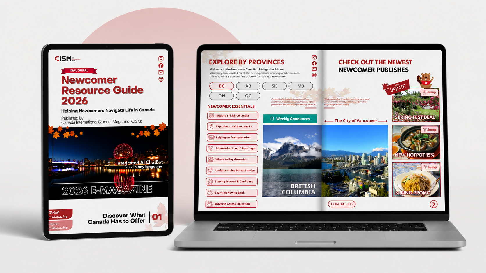
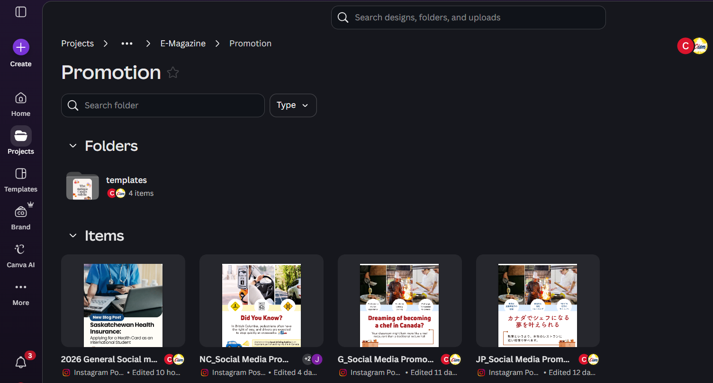
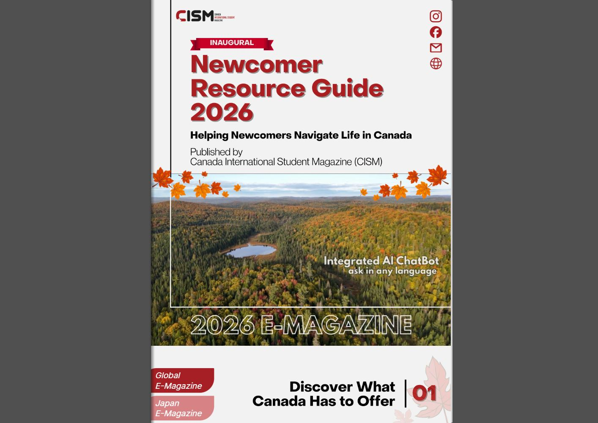
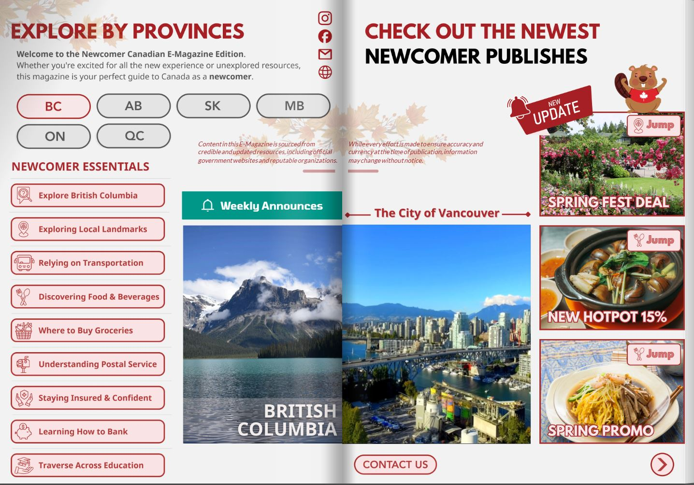
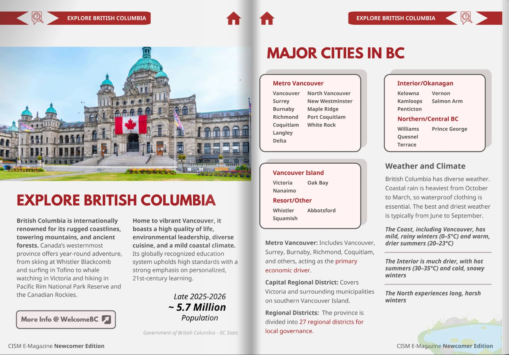
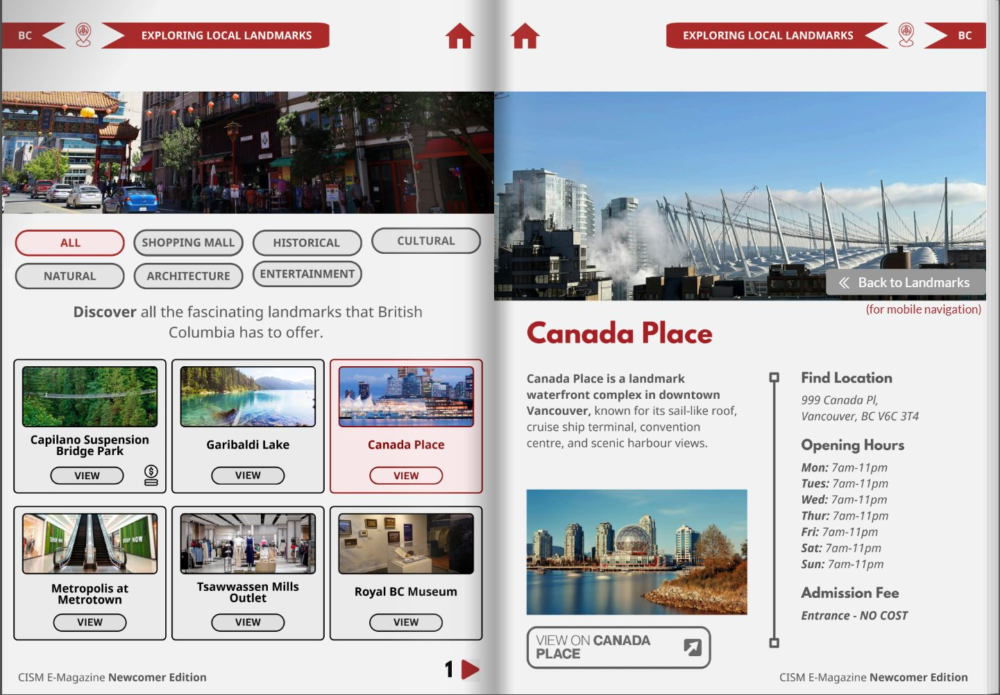
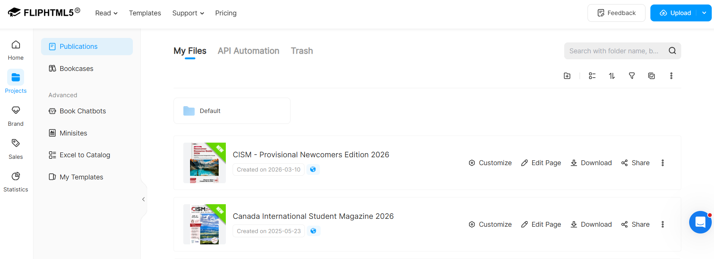

Hello, I'm
Jack Luo
UI/UX Designer


Marketing Design • Digital Publication • Campaign System
Designing and publishing a brand-new digital E-Magazine and supporting marketing system for newcomers to Canada.

Project Overview
The CISM Newcomer Resource Guide 2026 is a digital E-Magazine created to support newcomers navigating life in Canada. The publication provides practical information for living, studying, and settling in Canada, helping readers access useful resources in a clear and approachable format.
As the Marketing Designer at CISM, I was assigned by the CEO to design and publish this new E-Magazine edition from scratch. While the company already had an existing Global E-Magazine focused on educational resources, this project introduced a new product line specifically designed for newcomer audiences.
The Challenge
CISM needed a separate digital publication focused specifically on newcomers to Canada. The E-Magazine had to be practical, easy to navigate, visually engaging, and suitable for readers seeking clear guidance on everyday life in Canada.
My challenge was not only to design the publication, but to help create a repeatable design and publishing workflow that could support CISM’s growing E-Magazine ecosystem.
Project Goals
Process
I worked across planning, content organization, visual design, publishing, and campaign promotion to turn the Newcomer Guide into a complete digital product.
Organized the project through Trello, Excel, and Google Docs.
Arranged newcomer-focused content into a clear reading flow.
Created the E-Magazine layout system and publication visuals in Canva.
Prepared and launched the interactive digital guide through FlipHTML5.
Supported distribution through newsletters and social media templates.
Content outline
Page planning
Canva layouts
Newsletter build
FlipHTML5 upload
Campaign templates

Workflow & Project Management
Trello was used to track progress, assign tasks, and communicate project status with the marketing team. Microsoft Excel helped organize project details, page planning, and production tracking. Google Docs supported written content development and editing before the content moved into the design stage.
Once the content was ready, I used Canva to design the publication pages and create a consistent visual system. After design was completed, the final E-Magazine was published through FlipHTML5 as an interactive digital publication.
Audience & Content Strategy
The primary audience for the Newcomer Resource Guide is newcomers to Canada, including international students, families, and individuals adjusting to a new environment. Since these readers may be unfamiliar with Canadian systems and resources, the design needed to make information feel approachable and not overwhelming.
I approached the publication as both a marketing product and an information guide. Instead of treating each article as a separate visual piece, I designed the guide as a connected reading experience with logical sections, clear hierarchy, and layouts that support quick scanning.
E-Magazine Design System

CISM Newcomer Resource Guide 2026 Cover Page

CISM Newcomer Resource Guide 2026 Topic Selection

CISM Newcomer Resource Guide 2026 Article Spread

CISM Newcomer Resource Guide 2026 Local Landmark Section
Publishing the E-Magazine
After designing the publication, I prepared and published the guide through FlipHTML5. This transformed the static publication into an interactive digital magazine experience that could be shared online through a direct link.
This step was important because the project was not only about designing a file, but launching a new resource that could be distributed to CISM’s audience.

Marketing Ecosystem
I created social media templates for promoting CISM’s Global, Newcomer, and Japanese E-Magazine editions, helping the campaign remain consistent across different platforms and audiences.
Final Outcome
The final outcome was a newly designed and published digital E-Magazine: the CISM Newcomer Resource Guide 2026. The project expanded CISM’s E-Magazine offering by introducing a newcomer-focused edition that supports readers with practical information about life in Canada.
Impact Metrics to Add Later
Reflection
This project gave me valuable experience balancing company goals, audience needs, content organization, brand consistency, and publishing deadlines. I learned how to design not just a single publication, but a full communication system that connects digital publishing, email marketing, and social media promotion.
As a marketing designer, this project reflects my ability to transform content into a polished digital product while supporting a broader campaign strategy across multiple communication channels.
Hello, I'm
UI/UX Designer